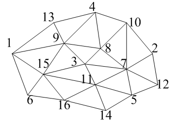
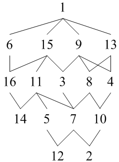
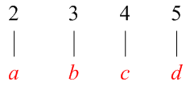
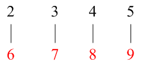
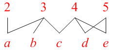
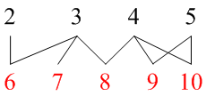
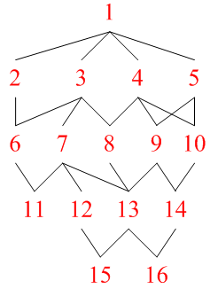
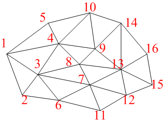

広告
・バンド幅最適化の方法
バンド幅の最適化とは、隣接する節点間の節点番号の差を最小にすることを意味しています。 ここでは、バンド幅が最小になる節点の割り振り方について考えてみます。

上図の領域について、バンド幅の最小化を考えてみます。この領域のバンド幅は、
(15 - 1) + 1 = 15
となります。バンド幅を最適化するために、節点を分木で表示すると下図となります。

ここで、下図の様な場合の節点配置を考えてみます。

この場合は、より小さい節点番号に小さい順に節点を割り振れば、バンド幅は最小となります。

次に、枝が結合・分離した場合を考えて見ます。

この場合も同様に節点番号の小さい順に節点を割り振れば、バンド幅は最小となります。

つまり、バンド幅を最小化するためには、節点番号のより小さい節点に、 節点番号のより小さい節点から順番に割り振ればよいことになります。 従って、分木で表した場合、ある段について左の枝から節点番号の小さい順に節点を割り振った場合、 次の段についても左の枝から小さい順に節点を割り振ればバンド幅は最小になります。 赤字が新しい節点番号です。

従って、新しい節点番号の領域は下図となります。

この図のバンド幅は、
(10 - 4) + 1 = 7
となります。
| prev | | | up | | | next |